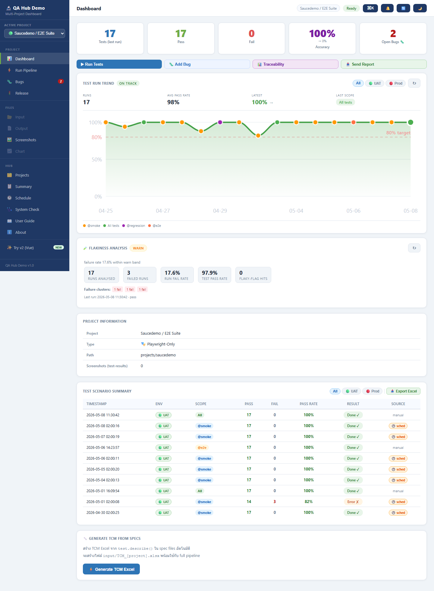

QA Hub Demo
End-to-end test orchestration for saucedemo.com
Built end-to-end · 17 tests · ~17 s runtime
The pitch in 30 seconds
QA team ใช้ Playwright + Pytest หลายตัว แต่ไม่มีศูนย์กลาง — เห็น trend ไม่ออก ติดตาม bug ลำบาก
Problem
- Local runs — nobody sees the trend
- Bugs ติดอยู่ใน head ของผู้รัน
- "Ready to ship?" ตอบไม่ได้
Solution
- Hub กลาง — 1 dashboard ดู trend
- Tag-based runs (smoke / e2e / regression / visual)
- Release gate ให้ verdict GO/NOGO อัตโนมัติ
Tech stack
Test layer
Playwright · TypeScript
Page Object Model
Tag-based filtering (--grep @smoke)
Hub backend
Flask · ~70 routes
Server-Sent Events for live logs
Background scheduler thread
Hub UI
Vue 3 + Pinia + Vite
Legacy vanilla-JS dashboard
Strangler-fig migration (both live)
State
JSON files — not SQL
config.json · run_history.json
schedules.json · bugs/
CI
GitHub Actions
Run tests on PR + push
Upload Playwright HTML report
Target
saucedemo.com — live site
6 built-in test users (happy / locked / problem / glitch / error / visual)
Architecture
Browser → Flask → JSON state → spawn Playwright
Browser (localhost:8080)
+-----------------------------+ +-----------------------------+
| Legacy dashboard ( / ) | | Vue v2 dashboard ( /v2/ ) |
+--------------+--------------+ +--------------+--------------+
| |
+------- fetch /api/* -------------+
|
+------------------------------V------------------------------+
| Flask app (hub/app.py) |
| /api/projects /api/run/log /api/release-gate |
| /api/run/tests (SSE) /api/bugs/* /api/schedules/* |
+-------+-----------------+--------------+--------------------+
| | |
release_gate.py scheduler thread validators
|
+------------------------------V-------------------------------+
| State (JSON) |
| config.json run_history.json schedules.json bugs/* |
+------------------------------+-------------------------------+
| spawn / read
+------------------------------V-------------------------------+
| projects/saucedemo/ — npx playwright test --grep @smoke |
| stdout streamed via SSE → appended to run_history.json |
+--------------------------------------------------------------+
Test target: saucedemo.com
ใช้ live e-commerce site ของจริงเป็น target — 6 test users built-in

Six users = six scenarios
happy standard_user
Baseline — shop, checkout, logout work end-to-end.
edge locked_out_user
Login error message — assert exact copy.
visual problem_user
All product images = same dog photo. Visual regression baseline.
perf performance_glitch_user
Slow login — verify timeouts & loading states.
edge error_user
Form validation breaks — assert correct error UX.
visual visual_user
Subtle layout shifts — pixel diff catches them.
Tests read like requirements
Page Object Model + TEST_USERS const → spec ไม่มี string magic
// tests/pages/LoginPage.ts
export const TEST_USERS = {
standard: { username: "standard_user", password: "secret_sauce" },
locked: { username: "locked_out_user", password: "secret_sauce" },
problem: { username: "problem_user", password: "secret_sauce" },
performance: { username: "performance_glitch_user", password: "secret_sauce" },
} as const;
// tests/e2e/TS_01_login.spec.ts
test("standard user logs in @smoke", async ({ page }) => {
const login = new LoginPage(page);
await login.goto();
await login.loginAs("standard");
await expect(page).toHaveURL(/inventory.html/);
});
17 tests · 17 seconds
TS_01 login · TS_02 inventory · TS_03 cart · TS_04 checkout · TS_05 logout · TS_06 visual
What the bot sees
After loginAs("standard") — 6 products, sort, add-to-cart, checkout flow

Hub dashboard
Trend chart + stats + run history — one glance answers "เมื่อคืน build เป็นไง"

Pipeline — one click run
Stage 5 spawns npx playwright test --grep @smoke · stdout streams via SSE

Bug tracker
Aging badges · severity · ผูกกับ release gate (Critical/High open = NOGO)

Release gate — 6 criteria
release_gate.py ให้ verdict GO / NOGO / NOT_READY ตามหลักฐาน ไม่ใช่ feel
1. Run scope
tag ≥ @e2e หรือ All
2. Pass rate
≥ 80% (configurable)
3. No Critical bugs open
hard fail
4. No High bugs open
warn band 1-2
5. Screenshots present
test-results/**/*.png
6. HTML report ready
playwright-report/index.html
Release gate — verdict

Daily smoke at 02:00
Scheduler thread · daily / weekly / cron · ผลลง run_history เหมือน manual run

Self-documenting — User Guide tab
Daily route + cycle ในตัว · legacy + Vue v2 sync ทุก feature

Why JSON state — not SQL?
Auditable
ทุก state change เห็นใน git diff ได้เลย
Recoverable
Copy/paste 1 ไฟล์ก็ restore ได้
No migration drama
Schema อยู่ใน code — ไม่ต้อง alter table
Fast enough
Atomic temp+rename · parse < 1 ms (cap 500 entries)
Trade-off: ไม่เหมาะ scale หลาย-team / multi-writer — แต่สำหรับ small QA hub มันคือ sweet spot
CI — GitHub Actions
name: saucedemo-playwright
on: [push, pull_request, workflow_dispatch]
jobs:
test:
runs-on: ubuntu-latest
defaults:
run:
working-directory: projects/saucedemo
steps:
- uses: actions/checkout@v4
- uses: actions/setup-node@v4
with: { node-version: "20", cache: "npm" }
- run: npm install
- run: npx playwright install --with-deps chromium
- run: npm test
- uses: actions/upload-artifact@v4
if: always()
with:
name: playwright-report-${{ github.run_id }}
path: projects/saucedemo/playwright-report/
What I'd build next
1. Live deployment
Render / Fly.io free tier — public URL ที่ HR เปิดดูได้ทันที
2. Mobile viewport project
saucedemo-mobile registered as planning แล้ว — เปิด pixel-7 viewport + visual snapshot
3. Allure report
แทน pytest-html เพื่อ trend ละเอียด + history
4. Slack webhook
Notify เฉพาะ scheduled run ที่ fail (ไม่สแปม manual)
Let's build great QA together
Repo: github.com/ArtSadVoice/qa-hub-saucedemo
Run locally: ./setup.ps1 → http://localhost:8080